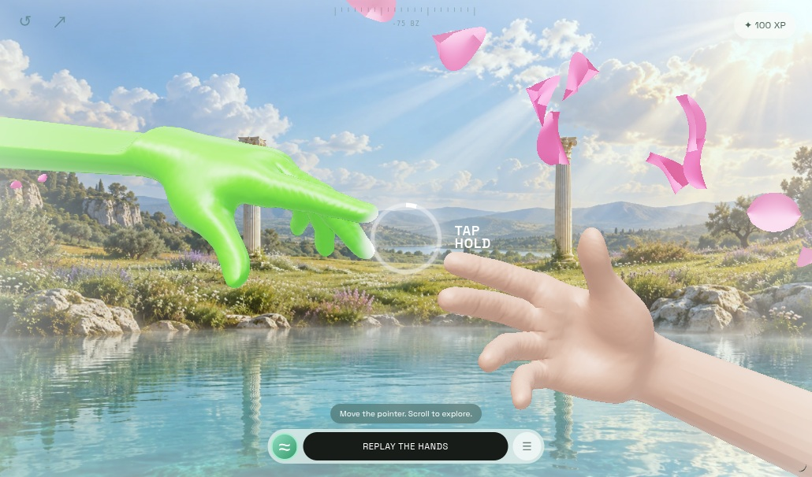
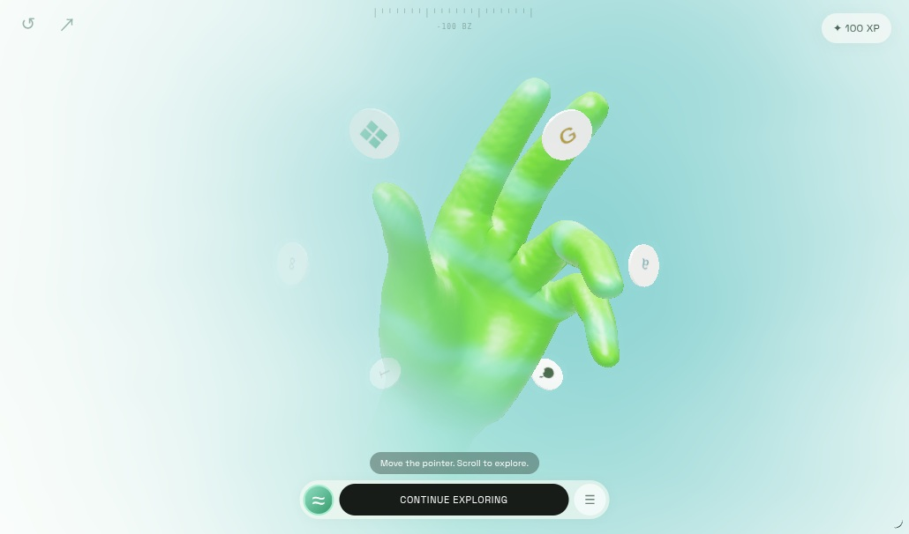
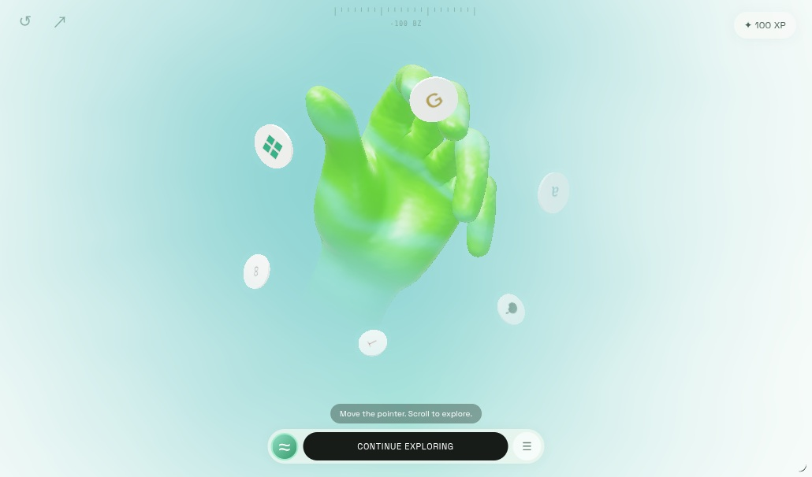
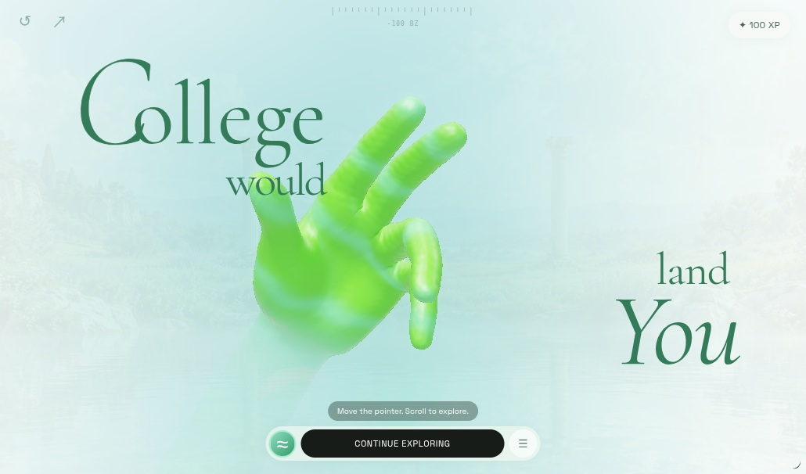
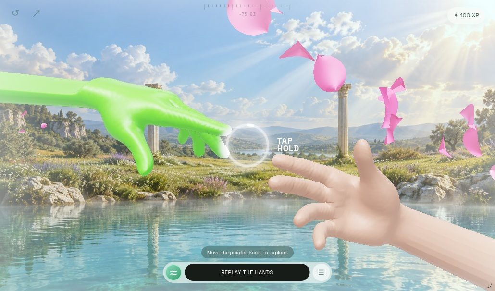
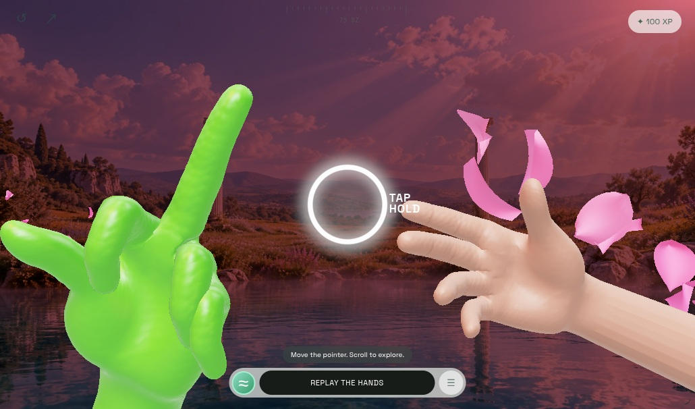
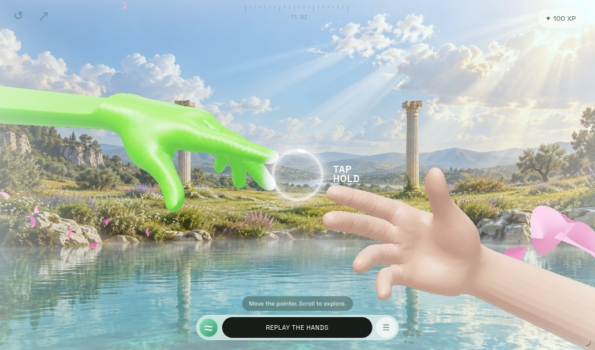

从绿色手，
到两只手的相遇。
这次重点是手与输入的真实联系：鼠标/手指改变三维位置和朝向，按下收握，滚动进入花园，长按改变手势与光线，松开恢复。画零只是完整路径的前段。

先看你关心的后半段。
真实鼠标移动、按下/松开、滚轮和长按驱动生产控制器，没有设置章节值或姿态值。视频以 24 fps 审核时钟取帧；不代表实际硬件帧率。
鼠标移动，手本身在动。


滚动进入同一段连续演出。


长按改变，松开恢复。


完整路径：加载到这次互动结束。
包含倒数、结霜、画零、解锁、You Believed、绿色手与圆牌、College / a JOB、双手、长按及恢复。
操作与当前边界。
| 桌面 | 移动鼠标；按下收握；滚轮推进/回退；到双手场景后长按中央光圈。 |
|---|---|
| iPad | 拖动手指互动；竖向滑动推进；长按光圈；也可用 Continue Exploring 和章节菜单。 |
| 三维范围 | 手、圆牌、花瓣与命中目标实时渲染。花园使用原创环境图和动态 Shader，属于 2.5D 背景。 |
| 复刻差异 | 交互路径已扩展到两段录屏的双手/长按部分；原手模、背景、字体和真实相机参数未取得，具体外观仍不同，不称像素完全一致。 |
| 测试环境 | Linux Chromium / SwiftShader、真实 CDP 鼠标与触控事件；尚未进行实体 iPad Safari 测试。 |